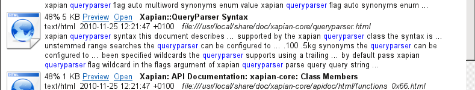
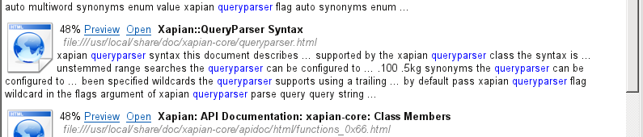
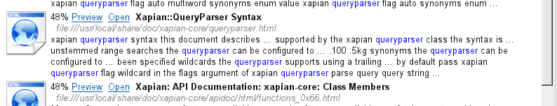
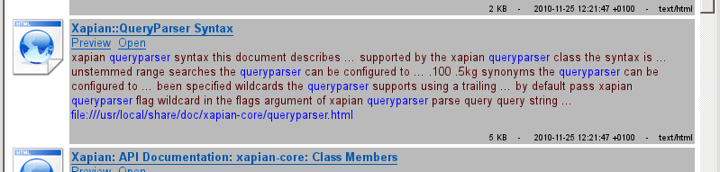
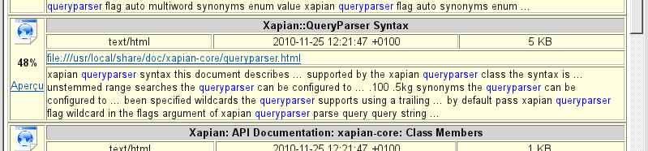
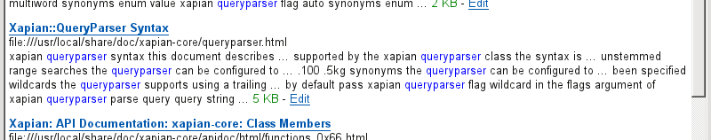
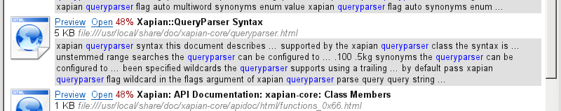
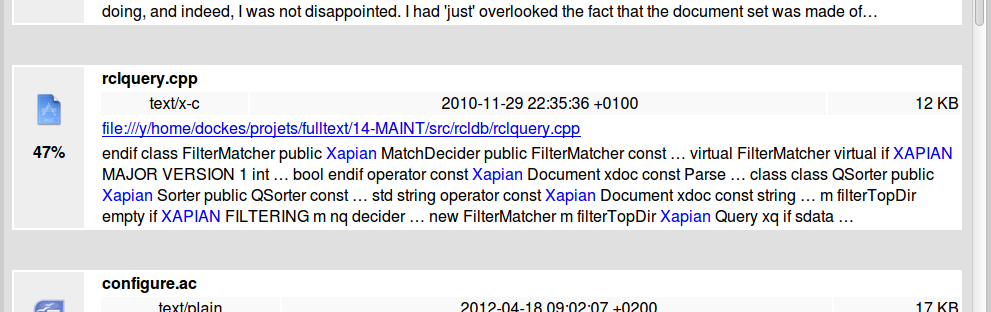

Recoll result list customising exemples
The Recoll result list is actually made of html text displayed inside a Qt Widget. In all Recoll versions, you can specify the format for the list entries: what data is displayed for each hit document and how. This used to include "almost full" support for HTML capabilities, with a few restrictions due to the Qt QTextBrowser object. The details are described in the Recoll manual.
As of Recoll 1.17, the result list is a WebKit object by default (WebKit is the basis for several major browsers), which yields full CSS and even Javascript support.
New in Recoll 1.17: the WebKit result list
For newer Recoll versions, you can specify the individual result format, as for previous versions. You can also define code to be included in the HTML header (ie: CSS or Javascript), using Preferences->Query Configuration->Result List->Edit result page html header insert
This, plus the full Javascript and CSS support in WebKit, open a world of possibilities for result list formatting and even behaviour.
The examples which follow are probably not generally very useful but they show the kinds of things you can do, if you can use Javascript/CSS which is not my case.
Using the icons as links
You can now make the list icons links that activate the preview or open action (or the document url which you can then drag/drop to other windows). Using images as links did not work with QTextBrowser.
Alternating result backgrounds
Using the following Javascript inside the header will yield alternating backgrounds for the results:
<script type="text/javascript">
function altRows() {
var rows = document.getElementsByClassName("rclresult");
for (i = 0; i < rows.length; i++) {
if (i % 2 == 0) {
rows[i].style.backgroundColor = "#d4e3e5";
}
}
}
window.onload = function() {
altRows();
}
</script>
Zooming the paragraph font size
If you are using a format with small fonts, it may be useful to be able to zoom the text when the mouse hovers over it. A very basic way to do this -with the standard paragraph format, which is a table- would be to include the following code in the header:
<style type="text/css">
table:hover {font-size: 130%;}
</style>
Of course, the selector should be adapted to your own result format. You should know that every result will be enclosed by Recoll inside a <div class="rclresult" rcldocnum="nn"> element.
Zooming the thumbnails
Recoll 1.17 and newer will display document thumbnails instead of the type icon if the thumbnail exists in the standard Freedesktop location. The icons/thumbnails are 64x64 pixels in size, which is a bit small. The standard thumbnail files are actually 128x128, which is much more detailed. Using them statically would consume too much list space though. Using CSS, you can get them to expand when the mouse is over them. Recipee:
Retrieve the CSS code from randsco pure CSS photo-caption zoom, and include it inside the result list html header by using the "Edit result page html header insert" from the GUI preferences. Don't forget to enclose the CSS code between
<style type="text/css"> </style>tags.Use something like the following result paragraph format (only the code around the img tag is relevant, the rest can be what you want):
<table><tr><td> <div class="PZ3zoom PZ3-l noBdr noCap noLnk" style="width:64px;height:64px;"> <a href="%U"> <img src='%I' width='64'></a> </div> </td><td> %R %S %L <b>%T</b><br>%M %D <i>%U</i> %i<br>%A %K </td></tr></table>
{kind=link}
Et voilà! The icons will grow to their full size when the mouse is over them.
Alternate icons theme
There is an alternate set of icons at kde-look.org. If you are running KDE desktop, it should be more consistent with the rest of your applications.
You do not need to replace the standard Recoll set of icons to use it, just extract it somewhere, and use the iconsdir variable in ~/.recoll/recoll.conf to point Recoll to it. e.g.:
iconsdir = /path/to/my/icons
Result list paragraph format samples (for all versions)
The format for paragraphs inside the Recoll GUI result list is customisable by specifying an html fragment (menu: Preferences->Query configuration->User interface->Result paragraph format string)
Here follow some sample formats. Most of them were contributed by kind users, and I'll be happy to show their names if they so wish (abstaining by default).
Recoll 1.15 default
<table>
<tr>
<td><img src='%I'></td>
<td>%R %S %L <b>%T</b><br>
%M %D <i>%U</i><br>
%A %K
</td>
</tr>
</table>

Alternating bands, bigger previews, and custom paragraph typesetting
The author's description for the following code:
It uses the "Alternating Results Background" from that page, plus my own layout which incorporates a larger view of image files. The 'large image' is scaled down from the actual image, rather than a scaled up version of the thumbnail.
The header fragment has the javascript for alternating backgrounds, and the CSS code:
<!-- Custom Header -->
<script type="text/javascript">
function altRows() {
var rows = document.getElementsByClassName("rclresult");
for (i = 0; i < rows.length; i++) {
if (i % 2 == 0) {
rows[i].style.backgroundColor = "#f0f0f0";
}
}
}
window.onload = function() {
altRows();
}
</script>
<style type="text/css">
.thumbnail {
display:block;
position:relative;
padding: 4px;
width: auto; /* set width of thumbnail image in 'paragraph' code - not here */
border:none;
z-index:0;
}
.thumbnail:hover {
border:none;
background-color: transparent;
z-index: 50;
}
.thumbnail span {
position: absolute;
left: -9999px;
visibility: hidden;
}
.thumbnail span img {
max-width:256px; /* set 'large image' max width/height - advise keeping these */
max-height:256px; /* the same to avoid inadvertently changing the aspect ratio */
width:auto; /* leave set to auto */
height:auto; /* leave set to auto */
background-color: gray;
padding: 1px;
border: 1px solid black;
}
.thumbnail:hover span {
visibility: visible;
top: 4px; /* top/left positions 'large image' relative to top left */
left: 88px; /* of parent thumbnail (plus padding) */
}
</style>
<!-- End of Custom Header -->
And the paragraph format:
<!-- Custom Paragraph -->
<table>
<tr>
<td>
<a class="thumbnail" href="#">
<img src="%I" width="64px" height="auto"> <!-- set width of thumbnail -->
<span>
<img src="%U">
</span>
</a>
<td>
<table>
<tr>
<td>
<div>
<b>%T</b></br>
%L</br>
<p><font color="grey">%A </font><font color="#CD6688"><i>%K</i></font></p>
<font color="green"><font size=1>
%U</br>
%R — %S—%D — %M
</font></font></br>
</div>
</td>
</tr>
</table>
</td>
</tr>
</table>
<!-- End Custom Paragraph -->
Result:

A simpler format, suggested in Bitbucket issue #69
<img src="%I" align="left">%R %L <b>%T</b><br> <i><font color="#808080">%U</font></i> %i<br> %A %K

Simple+table
Same format, but using a table to avoid text flowing into the icon area.
<table>
<tr>
<td><img src="%I" align="left"></td>
<td>%R %L <b>%T</b><br>
<i><font color="#808080">%U</font></i> %i<br>
%A %K
</td>
</tr>
</table>

Using a small font to make the size/date details less obstrusive
<table>
<tr>
<td><img src="%I" align="left"></td>
<td><table bgcolor="#bababa">
<tr><td><div>
<font face="Tahoma, sans-serif"><u><b><a href="P%N">%T</a></b></u><br>
<font color=#008000>%L</font><br>
<font color=#510101>%A %K</font><br>
<font color=#0100FF>%U</font>
<p align="right"><font size=1><font color=#000000>%S
- %D
- %M</font></p>
</div></td></tr>
</table></td>
</tr>
</table>

A very structured table
<table border="1" bgcolor="lightyellow">
<tr>
<td rowspan="4" width="40px" align="center" valign="center">
<img src="%I" width="32" height="32">
<p><b>%R</b></p>
<p><a href="P%N">Aperçu</a></p>
</td>
<th colspan="3" bgcolor="lightgrey">%T</th>
</tr>
<tr>
<td align="center">%M</td>
<td align="center">%D</td>
<td align="center">%S</td>
</tr>
<tr>
<td colspan="3"><a href="E%N">%U</a></td>
</tr>
<tr>
<td colspan="3">%A</td>
</tr>
</table>

Web-like from the user manual
<u><b><a href="P%N">%T</a></b></u><br> %U<br> %A <font color=#008000>%S</font> - <a href="E%N">Edit</a>

Clean-Looking from the user manual
<table>
<tr><td><img src="%I" align="left"></td>
<td>%L <font color="#900000">%R</font> <b>%T</b><br>
%S <font color="#808080"><i>%U</i></font>
<table bgcolor="#e0e0e0">
<tr><td><div>%A</div> %K </td></tr>
</table></td>
</table>

Another clean and nice one, using both a bit of header code and a custom paragraph format
This one also uses the custom icons set from this kde-look page.
The header code:
<style type="text/css">
body {
color: rgb(0, 0, 0);
background-color: rgb(224, 224, 224);
}
</style>
The paragraph code:
<table style="background-color: white; width: 950px;" border-style="none" border-color:="" border="0"> <tbody> <tr> <td rowspan="4" style="width: 68px; text-align: center; background-color: rgb(238, 238, 238);"> <img src="%I" height="32" width="32"> <p style="font-family: sans-serif;"><b>%R</b></p> <p style="font-family: sans-serif; color: rgb(0, 153, 0);"><br> </p> </td> <td style="vertical-align: top;"><br> </td> <th style="font-family: sans-serif; background-color: white; text-align: left;" colspan="3" bgcolor="lightgrey">%T</th> </tr> <tr> <td style="vertical-align: top; width: 11px;"><br> </td> <td style="text-align: center; font-family: sans-serif; background-color: rgb(249, 249, 249);">%M</td> <td style="text-align: center; font-family: sans-serif; background-color: rgb(249, 249, 249);">%D</td> <td style="font-family: sans-serif; text-align: right; background-color: rgb(249, 249, 249);">%S</td> </tr> <tr style="font-family: sans-serif; color: rgb(0, 153, 0);"> <td style="vertical-align: top;"><br> </td> <td colspan="3"><a href="E%N">%U</a></td> </tr> <tr style="font-family: sans-serif;" 8=""> <td style="vertical-align: top;"><br> </td> <td colspan="3">%A</td> </tr> </tbody> </table> <br> <br>
